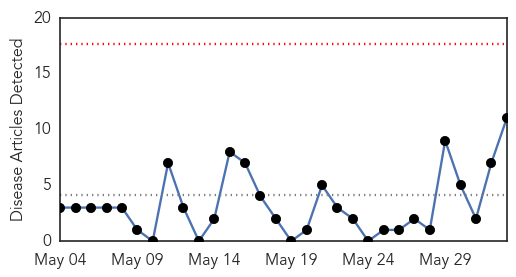
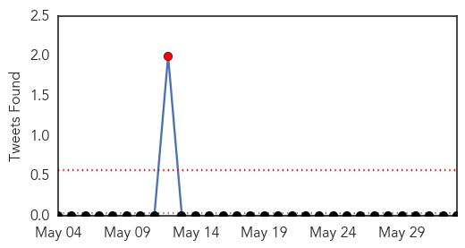
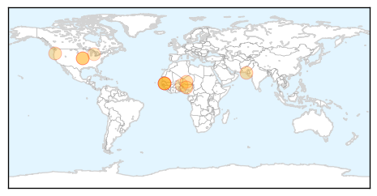

30 Day Trends
Web: 0 alerts, 0 warnings
Twitter: 1 alerts, 0 warnings
Top Articles:
- 0.998
- Niger meningitis epidemic has peaked, 545 dead
- 0.996
- Outbreak Bulletin - Vol. 5 Issue 2, 31 May 2015 - Sierra Leone
- 0.992
- New WHO Meningitis Report: 545 Victims in Nigeria
- 0.991
- 545 people dead from meningitis, WHO says epidemic has peaked
- 0.990
- Meningitis Epidemic Ravages Niger, Says WHO
- 0.971
- ‘Brain-eating’ amoeba kills sixth victim in Karachi
- 0.951
- University Of Oregon In the Midst Of Growing Meningitis Outbreak
- 0.918
- KU student died of rare but noncontagious form of meningitis
- 0.895
- Kansas freshman, Haley Drown, dies from pneumococcal meningitis
- 0.845
- Niger: Epidemic (meningitis & measles) Emergency Plan of Action (EPoA) DREF Operation n° MDRNE015, Operations update n° 1 - Niger
- 0.754
- Michigan must prepare for meningitis B vaccine and protect students on every campus
Top Tweets:
-
No tweets found for Jun 02, 2015
Web/News Articles
Tweets
Article Locations
Article Confidences